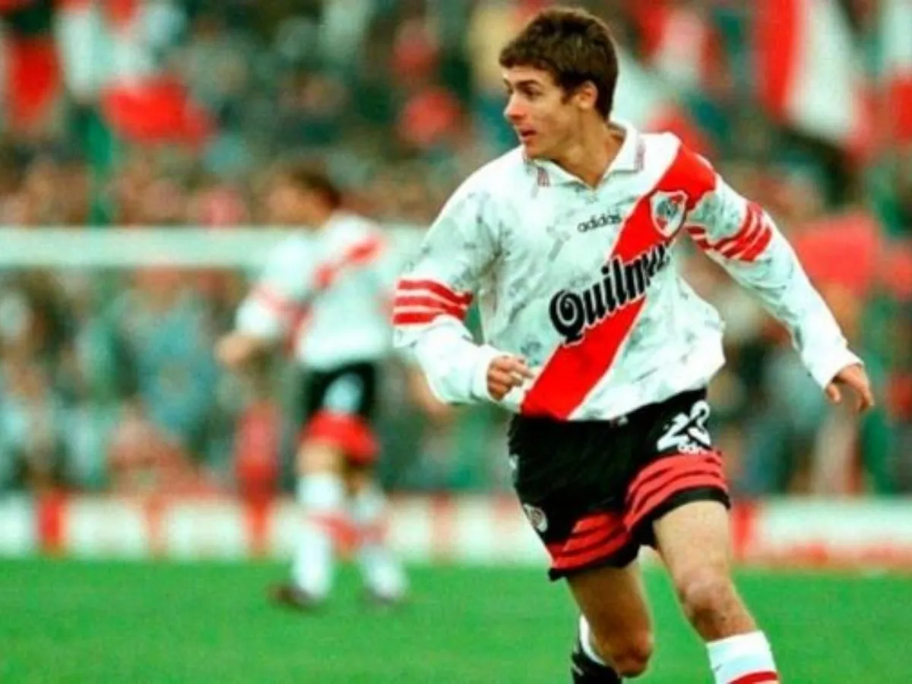
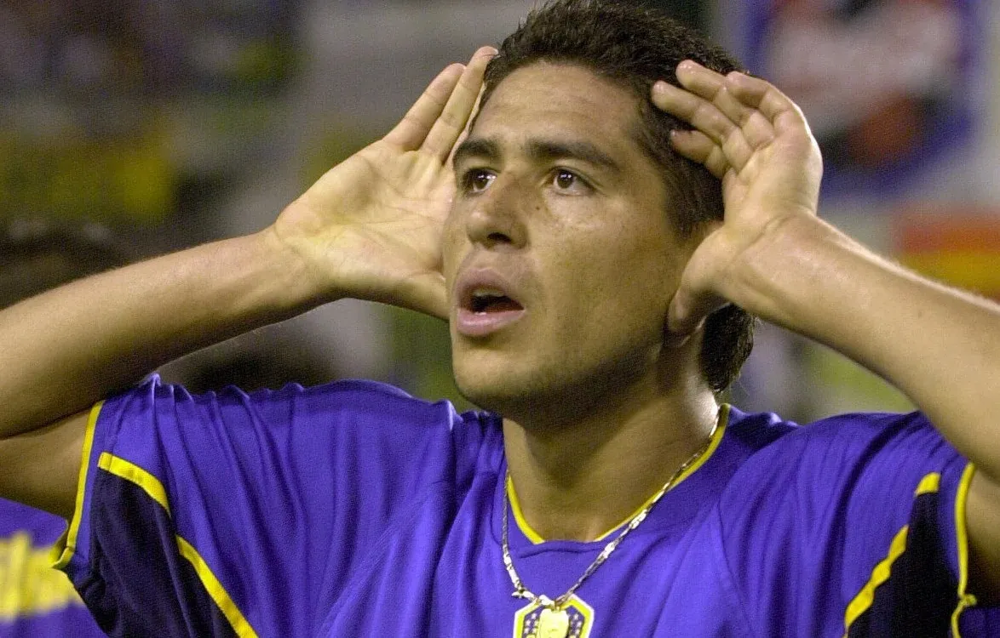
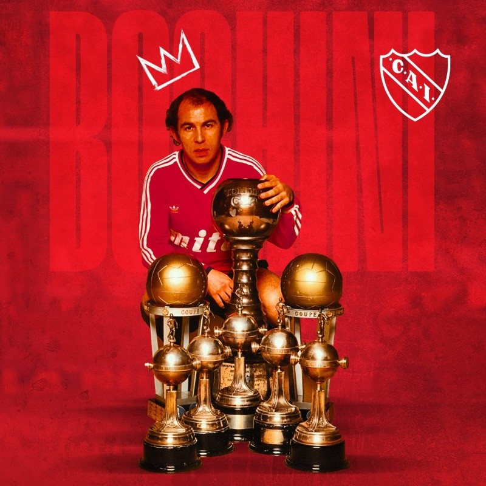
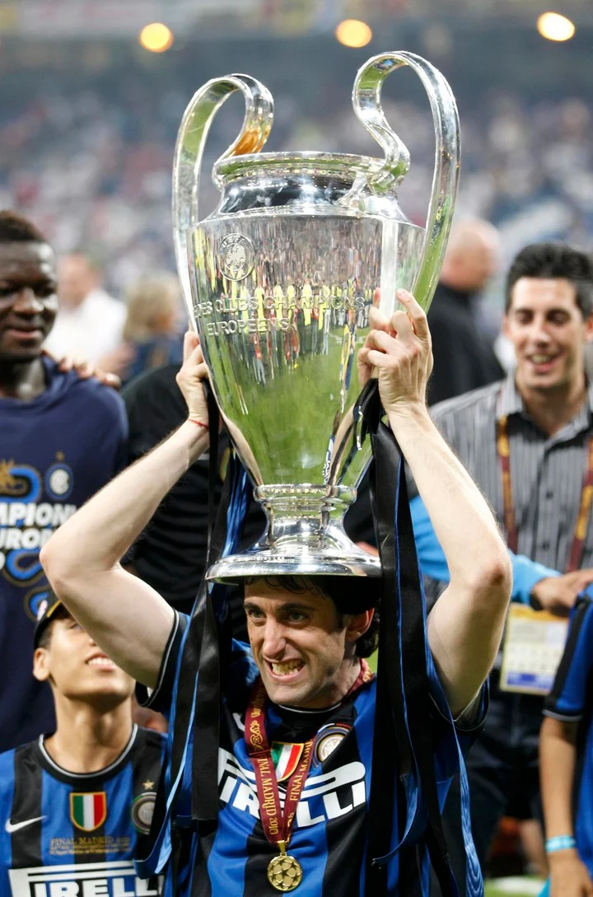
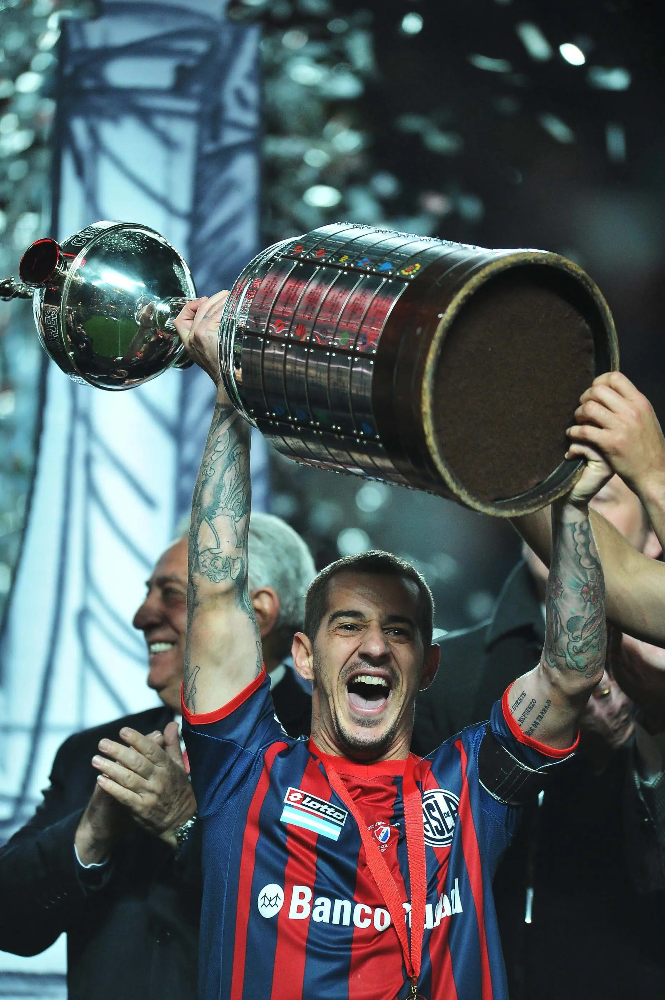

Los 5 Grandes

Pablo Cesar Aimar
Pablo César Aimar Giordano (Río Cuarto, Córdoba, 3 de noviembre de 1979) es un exfutbolista y entrenador argentino. Actualmente es parte del cuerpo técnico de la selección absoluta del mismo país.
Enganche, técnicamente bueno, con un gran repertorio de habilidades y buen ojo para el gol, luego de comenzar su carrera como profesional en River Plate en 1996, se marchó a LaLiga, donde protagonizó un total de 215 partidos y 32 goles a lo largo de ocho temporadas con Valencia y Real Zaragoza entre 2001 y 2008. Tras su experiencia española, jugó cinco temporadas en el Benfica, obteniendo un total de nueve títulos en Europa. En 2014 disputó ocho encuentros con el Johor Darul Takzim FC de Malasia y volvió a River. Debido a una lesión, solo pudo jugar algunos minutos ante Rosario Central, el 31 de mayo de 2015 y veinte más en la Copa Argentina frente a Liniers. A los 38 años, el 23 de enero de 2018, se despidió oficialmente de la actividad en el equipo de sus orígenes, Estudiantes de Río Cuarto, jugando 50 minutos ante Sportivo Belgrano, en la primera eliminatoria de la Copa Argentina 2017-18.
Habitual integrante de la selección argentina, participó en 52 partidos con el combinado nacional a lo largo de diez años y representó al fútbol argentino en dos ediciones de la Copa Mundial y de la Copa América (subcampeón en 2007), así como en una Copa Confederaciones, en la cual fue también subcampeón con el equipo argentino en 2005. En 2022 ganó la Copa Mundial de Fútbol con la selección argentina, en calidad de asistente técnico.
Clubes
River Plate (1996-2000, 6 Titulos, 114PJ 30G 26A)
Valencia(2001-2006, 4 Titulos, 216PJ 34G 50A )
Real Zaragoza (2006-2008 , 57PJ 5G 12A)
Benfica(2008-2013, 5 Titulos , 179PJ 17G 44A)
Johor Darul Takzim(2012 - 2012 , 1 tilulo, 8PJ 2G 2A)
River Plate (2015-2015, 2PJ )
Estuadiantes De Rio Cuarto (2018-2018, 1PJ)
Seleccion
Sub-17 (1995-1995, 12PJ 4G A3 )
Sub-22(1996-1996, 2PJ)
Sub-23 (2000-2000, 7PJ 3A)
Sub-20(1997-1999, 21PJ 7G 6A , 3 Titulos)
Mayor (1999-2009 , 52PJ 8G 5A)
Resumen Estadistico(Total: 653PJ 105G 142A, Titulos 18)

Juan Román Riquelme
Juan Román Riquelme (San Fernando, 24 de junio de 1978) es un exfutbolista argentino, y actual vicepresidente y director deportivo del Club Atlético Boca Juniors.Un emblema del "clásico número 10", Riquelme se destacó como uno de los mejores jugadores argentinos de todos los tiempos y más aclamados mediocampistas de su generación, y uno de los últimos referentes de su posición.Además, es ampliamente nombrado como el mejor jugador de la historia de Boca Juniors y una de sus más importantes figuras, debido a su desempeño por 13 temporadas (1996-2014) en el club, en las que consiguió ganar tres Copas Libertadores de América y una Copa Intercontinental, entre otros títulos.
Se formó en las divisiones juveniles de Argentinos Juniors, para más tarde debutar en Boca Juniors en 1996. En el conjunto de la rivera, pasó seis temporadas donde transitó una de las eras más gloriosas del club, ganando tres títulos locales (Apertura 1998, Apertura 2000, Clausura 1999) y tres internacionales (Copas Libertadores 2000, 2001 y Copa Intercontinental 2000). Fue una importante figura entre todos esos campeonatos, potenciado principalmente por su entrenador y mentor Carlos Bianchi. En 2002, fue traspasado al Barcelona, donde tan solo permaneció una temporada por sus problemas con el entrenador del equipo en esa época, Louis van Gaal.Se marchó cedido al Villarreal, club de España donde consiguió sus mayores éxitos en Europa, alcanzando un histórico tercer puesto en la liga y las semifinales de la Champions League por primera vez en la historia del club. En 2007, retornó a Boca y ganó su tercera Copa Libertadores de manera extraordinaria, siendo el goleador del equipo y el mejor jugador del torneo. En su tercer ciclo en el club, consiguió la Recopa Sudamericana 2008 y los torneos Apertura 2008 y Apertura 2011. Acabó yéndose en 2014, siendo el 6.º jugador con más partidos del club (388), el 7.º con más títulos (11) y su 11.º máximo goleador histórico, con 92 goles. Además es el jugador con más presencias en La Bombonera, con 206. Se retiró en Argentinos Juniors, donde alcanzó el ascenso a la Primera División.
A nivel internacional, fue parte del seleccionado juvenil sub-20 de Argentina, con el cual ganó el Sudamericano Sub-20 de 1997 y el Mundial Juvenil de 1997 disputado en Malasia. En 1997 debutó en la selección mayor, donde tan solo disputó el Mundial de Alemania 2006, quedando afuera en cuartos de final. Alcanzó la final de la Copa Confederaciones 2005 y la Copa América 2007, perdiendo ambas contra Brasil. En 2008, fue parte del equipo que ganó la medalla de oro en los Juegos Olímpicos de Pekín. En 2009 decidió retirarse de la selección, perdiendo la posibilidad de disputar el Mundial de Sudáfrica 2010.
Fue distinguido como el futbolista del año en Argentina en cuatro oportunidades (2000, 2001, 2008 y 2011) y como el futbolista del año en Sudamérica en 2001. Además, obtuvo el Premio Don Balón al mejor jugador extranjero de la Liga Española en la temporada 2004-05, y entre 2005 y 2007 fue incluido en la lista de nominados para las ternas de los premios Jugador Mundial de la FIFA y el Balón de Oro.Riquelme fue parte del Equipo Ideal de América en seis oportunidades (1999, 2000, 2001, 2007, 2008 y 2011).
Clubes
Argentinos juniors inferiores (1991-1996,)
Boca juniors (1996-2002,194PJ 44G 60A, 6 Titulos)
F.C.Barcelona(2002-2003, 42PJ 6G 10A)
Villarreal(2003-2007, 145PJ 45G 49A , 1)
Boca juniors(2007-2014, 194PJ 48G 63A,5 Titulos)
Argentinos juniors (2014-2015,18PJ 5G 3A)
Seleccion
Sub-20(1997-1998, 21PJ 7G 11A , 2 Titulos)
seleccion olimpica (2000-2008 , 10PJ 2G 2A , 1 Titulos)
Mayor(1997-2008, 51P 17G 21A)
Resumen Estadistico(593PJ 148G 185A , 15 Titulos)

Ricardo Enrique Bochini
icardo Enrique Bochini (Zárate, Buenos Aires, Argentina, 25 de enero de 1954) es un exfutbolista argentino, ampliamente considerado como el máximo ídolo en la historia de Independiente. Su puesto era de enganche, pasando a la historia como uno de los representantes más sobresalientes del puesto, y convirtiéndose en un arquetipo del jugador que lleva la camiseta N°10.
Debutó el 25 de junio de 1972 en Independiente, club donde jugó toda su carrera. En Independiente fue protagonista de la «era dorada» del club, y las competencias conquistadas por esa época lo tuvieron como protagonista. Bochini tuvo una carrera excepcional para un futbolista, ganando una enorme cantidad de títulos tanto nacionales como internacionales: con Independiente ganó 4 Copas Libertadores (1973, 1974, 1975 y 1984), 3 Copas Interamericanas (1973, 1974 y 1976), 2 Copas Intercontinentales (1973 y 1984), 2 campeonatos de Primera División Argentina (1983 y 1989) y 2 campeonatos Nacionales (1977 y 1978).
Con la selección argentina de fútbol fue internacional desde 1973 hasta 1986, y ganó el Mundial de México '86.
Se retiró en 1991, dejando atrás 19 años como uno de los más grandes símbolos del fútbol a nivel mundial, en una carrera donde jugó 714 partidos, metió 108 goles y si bien no hay estadísticas oficiales, se estima que realizó más de 200 pases-gol.
Ganó además como distinciones individuales los premios al Futbolista Argentino del Año (1983), 3° puesto al Futbolista Sudamericano del Año (1984), miembro del Equipo Ideal de América (1989), el Diploma al Mérito en los Premios Konex de Deportes (1990) y miembro del Salón de la Fama de la AFA (2007)
Es parte del olimpo de máximos ídolos de Independiente, junto con otros jugadores como Seoane, Orsi, Erico, Sastre, De La Mata, Bello, Cervino, Grillo, Varacka, Navarro, Santoro, Pastoriza, Yazalde, Artime, Pavoni, Bertoni, Galván, Rojas, Trossero, Villaverde, Giusti, Clausen, Burruchaga y Ríos, entre muchos otros.
Bochini se destacó por su excepcional estilo de juego, por su sentido de ubicación dentro de la cancha, su mapeo de cada rincón del campo de juego, su rapidez mental, sus habilidades de gambeta, su eficiencia en el manejo de los esfuerzos físicos ante rivales mucho más poderosos físicamente que él, y sus pases milimétricos que dejaban a sus compañeros cara a cara con el gol, razón por la que pasaron a llamarse «pases bochinescos». Bochini se volvió uno de los iconos por antonomasia del fútbol en Argentina, por su calidad como referente en la orquestación de jugadas de ataque para su equipo, su creación, manejo y definición de ataques, su habilidad para desarmar el cerrojo de defensas rivales con simples y sorpresivos movimientos, y el hecho de haber jugado toda su carrera en Independiente. Llegó a ser un fenómeno que llevaba a hinchas de todos los clubes a ver partidos de Independiente solo para verlo jugar a él. Se ganó un privilegio reservado a muy pocos jugadores: ser aplaudido por hinchadas rivales. El propio Diego Maradona declaró que su principal influencia en el desarrollo de su estilo de juego fue Bochini.
Su nombre ha pasado a ser una leyenda en la historia del deporte, y hasta el día de hoy su recuerdo permanece en peñas, calles, placas, estatuas, libros y homenajes que le dedican los amantes del fútbol. El estadio del club Independiente lleva su nombre.
Clubes
Independiente de Avellaneda(1972-1991,714PJ 106G, 13 Titulos)
Seleccion
Mayor(1986-1986, 1PJ)
Resumen Estadistico (715PJ 106G , 13 Titulos)

Diego Alberto Milito
Diego Alberto Milito (Bernal, Quilmes, Argentina, 12 de junio de 1979) es un ex-futbolista profesional y dirigente deportivo de fútbol argentino que se desempeñaba como delantero y su último equipo fue el Racing Club de Avellaneda, en donde es considerado uno de los jugadores más notables que tuvo en su historia.
Durante su carrera jugó en el Inter y en Genoa (en Italia);Zaragoza (en España); y Racing (en Argentina), del cual fue también mánager deportivo. Es hermano del exjugador de Independiente, Gabriel Milito, y primo de Fernando Elizari.
Su carrera comenzó en el año 1999, debutando con el primer equipo de Racing Club. Sus momentos de idolatría en la institución comenzarían a partir del año 2001, en donde lograría salvar a su equipo de la promoción y, seis meses después, se consagraría campeón del inolvidable Torneo Apertura 2001 bajo la conducción técnica de Mostaza Merlo. A partir de los siguientes años, conseguiría convertirse en goleador de su equipo y se ganaría el cariño de la gente académica.
Después de su excelente paso por Racing, en 2004 llegaría al Génova, que por esos momentos deambulaba en la segunda división del fútbol italiano. Gracias a sus goles, lograría que su equipo ascienda a la Serie A; pero debido a motivos administrativos, el conjunto genovés descendería a la tercera división. Milito se marcharía al Real Zaragoza del fútbol español en 2005, en donde compartiría equipo con su hermano Gabriel y otras figuras del fútbol internacional. Lograría convertirle cuatro goles al Real Madrid en la Copa del Rey 2005-06 y llegaría hasta la final luego de eliminar a los más grandes equipos de España.
En 2008 retornaría a Génova y se convertiría en el goleador del equipo, por lo que llamó la atención de grandes equipos. Sería, finalmente, el Inter de Milán quien se quedaría con los servicios de Diego. En la temporada 2009-10, lograría ganar la Serie A, la Copa de Italia y la UEFA Champions League 2009-10 en el Santiago Bernabeú frente al Bayern Múnich, siendo el autor de los únicos dos tantos del encuentro. En años posteriores lograría consolidarse en el equipo y ganaría la Copa Mundial de Clubes 2010.
En 2014 regresa al club que lo vio nacer, Racing, quién no venía atravesando un buen momento. Gracias a la experiencia de Diego Milito, la Academia volvería a dar la vuelta olímpica en el Torneo de Transición. En 2015 volvería a disputar algunos partidos de Copa Libertadores y el Príncipe se ganaría el respeto se toda la hinchada racinguista. Se retiraría en mayo de 2016, convirtiendo su último gol en el partido de despedida ante Temperley.
Entre los momentos más destacados de su carrera resaltan su doblete al Bayern de Múnich en la final de la Liga de Campeones de la UEFA 2009-10 para darle la 3.a copa de Europa al Inter, cuatro goles al Real Madrid en semifinales de la Copa del Rey 2005-06 jugando para el Real Zaragoza y sus dos coronaciones en el fútbol argentino en 2001 y 2014 con Racing Club.
Fue internacional con la Selección de fútbol de Argentina. Con ella, lograría disputar las Copas Américas 2007 (en donde quedaría subcampeón) y 2011. Además participó en dos encuentros de la Copa Mundial de Fútbol de 2010 llevada a cabo en Sudáfrica. Su único gol oficial lo convirtió ante Colombia en la Copa América 2007.
Clubes
Racing Club de Avellaneda(1999-2003, 148PJ,37G , 1 Titulo)
Genoa(2004-2005, 64PJ 34G)
Real Zaragoza(2005-2008 , 125PJ 61G)
Genoa(2008-2009, 34PJ 26G)
Inter de Milan(2009-2014, 171PJ 75G, 6 Titulos )
Racing Club de Avellaneda(2014-2016, 73PJ 22G, 1 Titulo)
Seleccion
Mayor(2003-2011, 25PJ 4G)
Resumen Estadistico(640PJ 260G , 8 Titulos)

Leandro Atilio Romagnoli
Leandro Atilio Romagnoli (Buenos Aires, 17 de marzo de 1981) es un exfutbolista y entrenador argentino que jugaba como mediocampista ofensivo. Desarrolló la mayor parte de su carrera en San Lorenzo, siendo el jugador con más títulos obtenidos en la historia del club y considerado como el último gran ídolo de la institución.
Como futbolista profesional, fue campeón de la Copa Libertadores, la Copa Mundial Sub-20, la Primera División de Argentina, la Copa Sudamericana, la Copa Mercosur, la Copa de Portugal y la Supercopa de Portugal. A su vez, fue internacional con la Selección Argentina bajo la conducción de Marcelo Bielsa.
Su estilo de juego se centro en el regate y el pase, siendo uno de los futbolistas con más asistencias contabilizadas en la historia del fútbol. Si bien comenzó como un 10 clásico argentino, terminó su carrera jugando como volante por las bandas (posición con la que obtuvo la mayor parte de sus títulos con San Lorenzo y Sporting de Lisboa).
Anunció su retirada como jugador profesional el 6 de junio de 2018, convirtiéndose a la vez en el nuevo mánager del club porteño. En 2021, se convirtió en el actual director técnico de la reserva de San Lorenzo.
Clubes
San Lorenzo(1998-2004, 196PJ 27G 53A, 3 Titulo)
Tiburones rojos de Veracruz(2005-2005, 29PJ 1G 8A)
Sporting de Lisboa(2006-2009, 72PJ 8G 12A, 4 Titulo)
San Lorenzo (2009-2018,203PJ 18G 37A,3 Titulos )
Seleccion
Sub-20(2001-2001, 7PJ 2G 3A, 1 Titulo)
Mayor(2003-2003, 1PJ)
Resumen estadistico (428PJ 42G 98PJ, 11 Titulos)